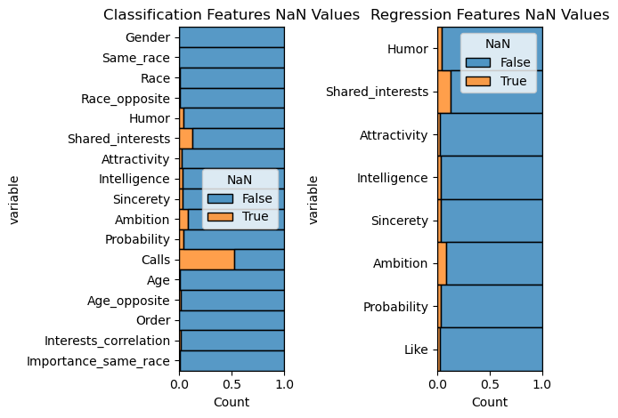
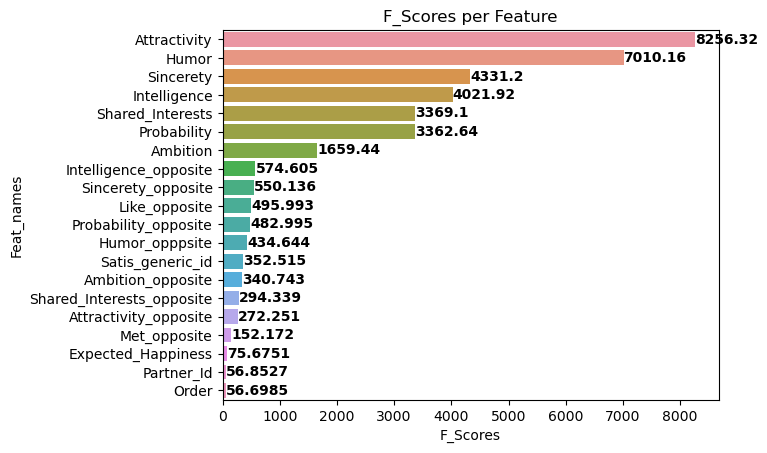
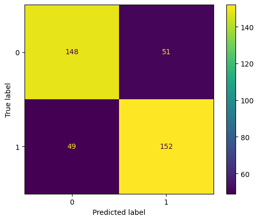
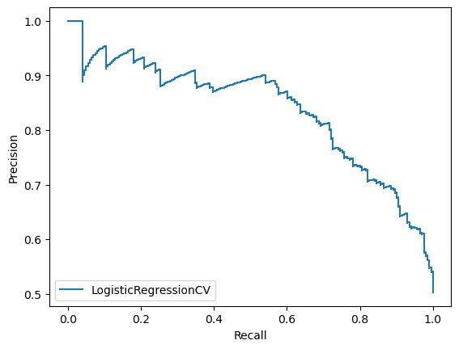
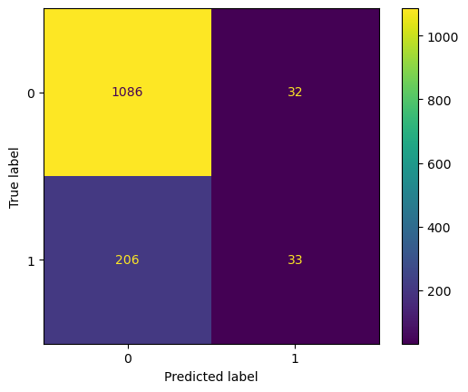
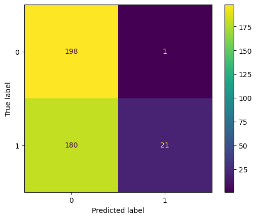

--- Regression ---
<class 'pandas.core.frame.DataFrame'>
Int64Index: 8378 entries, 0 to 8377
Data columns (total 8 columns):
# Column Non-Null Count Dtype
--- ------ -------------- -----
0 Humor 8028 non-null float64
1 Shared_interests 7311 non-null float64
2 Attractivity 8176 non-null float64
3 Intelligence 8082 non-null float64
4 Sincerety 8101 non-null float64
5 Ambition 7666 non-null float64
6 Probability 8069 non-null float64
7 Like 8138 non-null float64
dtypes: float64(8)
memory usage: 589.1 KB
None
--- Classification ---
<class 'pandas.core.frame.DataFrame'>
RangeIndex: 6784 entries, 0 to 6783
Data columns (total 17 columns):
# Column Non-Null Count Dtype
--- ------ -------------- -----
0 Gender 6784 non-null category
1 Same_race 6784 non-null category
2 Race 6784 non-null category
3 Race_opposite 6784 non-null category
4 Humor 6784 non-null float64
5 Shared_interests 6784 non-null float64
6 Attractivity 6784 non-null float64
7 Intelligence 6784 non-null float64
8 Sincerety 6784 non-null float64
9 Ambition 6784 non-null float64
10 Probability 6784 non-null float64
11 Calls 6784 non-null float64
12 Age 6784 non-null float64
13 Age_opposite 6784 non-null float64
14 Order 6784 non-null int64
15 Interests_correlation 6784 non-null float64
16 Importance_same_race 6784 non-null float64
dtypes: category(4), float64(12), int64(1)
memory usage: 716.3 KB
NoneReport
Group A: Alexander Benz, Lukas Zaiser, Sven Weiß
Introduction and data
REMOVE THE FOLLOWING TEXT
This section includes an introduction to the project motivation, data, and research question. Describe the data and definitions of key variables.
It should also include some exploratory data analysis.
All of the EDA won’t fit in the paper, so focus on the EDA for the response variable and a few other interesting variables and relationships.
Platzhalter Sven
Introduction
In the last 30 years, the dating approach has changed and has become increasingly difficult. The willingness to date has decreased, dating is too expensive and time consuming, we have too many (perceived) options to date someone and we struggle because of accepting too easily negative sex stereotypes. In the 19th century, a custom in the United States called New Year’s Calling, was that on New Year’s Day many young, single women would hold an Open House (a party or reception during which a person’s home is open to visitors) on 1 January where they would invite eligible bachelors, both friends and strangers, to stop by for a brief (no more than 10–15-minute) visit. This custom was established with the term SpeedDating as a registered trademark by Aish HaTorah, who began hosting SpeedDating events in 1998.
10 years later, Fisman et al. conducted a survey regarding speed dating habits and collected 8,000 observations during his 2 – year observation in his paper Gender Differences in Mate Selection: Evidence from a Speed Dating Experiment. Because speed dating has become more and more interesting in the last few years and also through Corona a completely new dating approach has emerged, we wanted to analyse this dataset with the following questions in mind:
- What are the most effective characteristics to achieve a match in opposite sex speed dating?
- A match may be a positive match value (1 or 0) or a high like value (1 - 10)
Our dataset was pretty helpful in answering this and more questions, as there were a lot of helpful features:
Descriptive terms for our used variables
| Name | Description | Descriptive term |
|---|---|---|
| calls | Event of a participant conducting a “you_call” or “them_cal” with the other party | Calls of participants |
| attr | Rating of the attribute for this person from 1 - 10. | Attractivity of speed dating participant |
| sinc | Rating of the attribute for this person from 1 - 10. | Sincerety of speed dating participant |
| intel | Rating of the attribute for this person from 1 - 10. | Intelligence of speed dating participant |
| fun | Rating of the attribute for this person from 1 - 10. | Humor of speed dating participant |
| amb | Rating of the attribute for this person from 1 - 10. | Ambition of speed dating participant |
| shar | Rating of the attribute for this person from 1 - 10. | Shared Interests/Hobbies of the speed dating participant to the other party |
| like | Overall, how much do oyu like this person. 1 (don’t like at all) to 10 (like a lot) | Strength of like of speed dating participant to the other party |
| prob | How probable do you think it is that this person will say ‘yes’ for you? 1 (not probable) to 10 (extemely probable) | Probability of speed dating participant to like the other party |
| met | Have you met this person before? (1 = yes, 2 = no) | Meeting indicator of participants |
| gender | Gender of the person. Female = 0, Male = 1 | Gender of speed dating participant |
| order | The number of date that night when met partner | Order of date of speed dating participant and the other party during event |
| match | 1 = yes, 0 = no | Match of the speed dating participant and the other party |
| int_corr | Correlation between participant’s and partner’s ratings of interests in Time 1 | Correlation of the speed dating participant and the other party |
| samerace | Participant and the partner were the same race. 1 = yes, 0 = no | Indicates, if the speed dating participant and the other party have the same race |
| age | Age of the person | Age of speed dating participant |
| age_o | Age of partner | Age of other party |
| race | Race of the attendee 1 = Black/African American 2 = European/Caucasian-American 3 = Latino/Hispanic American 4 = Asian/Pacific Islander/Asian-American 5 = Native American 6 = Other |
Race of speed dating participant |
| race_o | Race of partner | Race of other party |
| imprace | How important is it that a person you date be of the same racial/ethic background? (1 - 10) | Importance of the other party having the same race as the speed dating participant |
| intel_o | Intelligent. Rating by partner the night of the event from 1 (awful) to 10 (great) | Intelligence of the other party |
| sinc_o | Sincere. Rating by partner the night of the event from 1 (awful) to 10 (great) | Sincerety of the other party |
| like_o | Overall, how much do oyu like this person. 1 (don’t like at all) to 10 (like a lot) | Strength of like of to the other party |
| prob_o | How probable do you think it is that this person will say ‘yes’ for you? 1 (not probable) to 10 (extemely probable) | Probability of the other party to like speed dating participant |
| fun_o | Fun. Rating by partner the night of the event from 1 (awful) to 10 (great) | Humor of the other party |
| satis_2 | Generic Id | Generic Id |
| amb_o | Ambitious. Rating by partner the night of the event from 1 (awful) to 10 (great) | Ambition of the other party |
| shar_o | Shared Interests/Hobbies. Rating by partner the night of the event from 1 (awful) to 10 (great) | Shared Interests/Hobbies of the other party to speed dating participant |
| attr_o | Attractive. Rating by partner the night of the event from 1 (awful) to 10 (great) | Attractivity of the other party |
| met_o | Have you met this person before? (1 = yes, 2 = no) | Meeting indicator of the other party |
| exphappy | Overall, on a scale of 1-10, how happy do you expect to be with the people you meet during the speed-dating event? | Expected Happiness of meeting people |
| pid | partner’s iid number | partner’s iid number |
Platzhalter Alex
We want to answer our research questions in 4 steps: Step 1: Importing the Required Libraries Step 2: Cleaning the Dataset Step 3: Analyzing the Dataset Step 4: Preparing the Model
The main, effective variables we want to look at to answer our research questions are ‘Match’ (as our predictor variable for the classification) including the personal attributes/features and ‘Like’ for the regression. For all variables, we use descriptive terms in order to recognize them better. First, we want to analyze the importance of each personal attributes for achieving a match (classification) on the one hand and for the strength of a like (regression) on the other hand.

Text(0.5, 1.08, 'Regression Features')

Methodology
After cleaning our dataset and our initial exploratory data analysis, we can see the relationships between the respective outcome and possible predictors for each of the classification and regression. We use the following models respectively: Classification: Logistic Regression
Regression: Linear Regression, Multiple Regression Lasso XGBOOST
Platzhalter Sven
For the Logistic Regression, we use the LogisticRegressionCV model. On default, this model includes a 5 cross fold validation with Stratified K-Folds so there is no need to do further training and validation
See: https://scikit-learn.org/stable/modules/generated/sklearn.linear_model.LogisticRegressionCV.html
The most important metrics for logicstic regression are: - Confusion Matrix - Precision, Recall and R1 values - ROC value and curve
Platzhalter Alex
precision recall f1-score support
No match 0.85 0.98 0.91 4499
Match 0.56 0.15 0.24 928
accuracy 0.83 5427
macro avg 0.71 0.56 0.57 5427
weighted avg 0.80 0.83 0.79 5427
The ROC score is: 0.7909559060186676
precision recall f1-score support
No match 0.76 0.73 0.75 801
Match 0.74 0.77 0.75 799
accuracy 0.75 1600
macro avg 0.75 0.75 0.75 1600
weighted avg 0.75 0.75 0.75 1600
The ROC score is: 0.8448961224030601
precision recall f1-score support
0 0.52 0.99 0.69 199
1 0.95 0.10 0.19 201
accuracy 0.55 400
macro avg 0.74 0.55 0.44 400
weighted avg 0.74 0.55 0.44 400





REMOVE THE FOLLOWING TEXT
This section includes a brief description of your modeling process.
Explain the reasoning for the type of model you’re fitting, predictor variables considered for the model.
Additionally, show how you arrived at the final model by describing the model selection process, variable transformations (if needed), assessment of conditions and diagnostics, and any other relevant considerations that were part of the model fitting process.
Results
REMOVE THE FOLLOWING TEXT
This is where you will output the final model with any relevant model fit statistics.
Describe the key results from the model. The goal is not to interpret every single variable in the model but rather to show that you are proficient in using the model output to address the research questions, using the interpretations to support your conclusions.
Focus on the variables that help you answer the research question and that provide relevant context for the reader.
Discussion + Conclusion
REMOVE THE FOLLOWING TEXT
In this section you’ll include a summary of what you have learned about your research question along with statistical arguments supporting your conclusions. In addition, discuss the limitations of your analysis and provide suggestions on ways the analysis could be improved. Any potential issues pertaining to the reliability and validity of your data and appropriateness of the statistical analysis should also be discussed here. Lastly, this section will include ideas for future work.
Appendix
Tuning
precision recall f1-score support
0 0.81 0.64 0.71 199
1 0.70 0.85 0.77 201
accuracy 0.74 400
macro avg 0.76 0.74 0.74 400
weighted avg 0.76 0.74 0.74 400

precision recall f1-score support
0 0.52 0.99 0.69 199
1 0.95 0.10 0.19 201
accuracy 0.55 400
macro avg 0.74 0.55 0.44 400
weighted avg 0.74 0.55 0.44 400